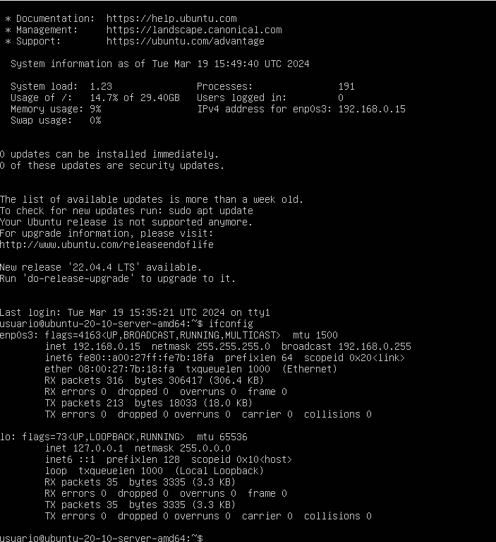
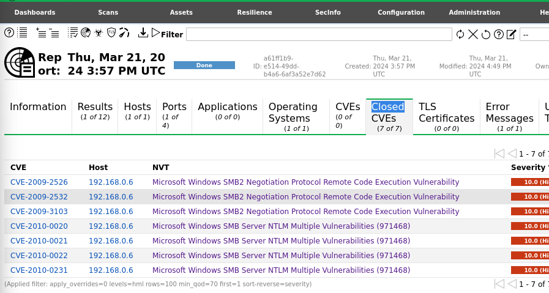
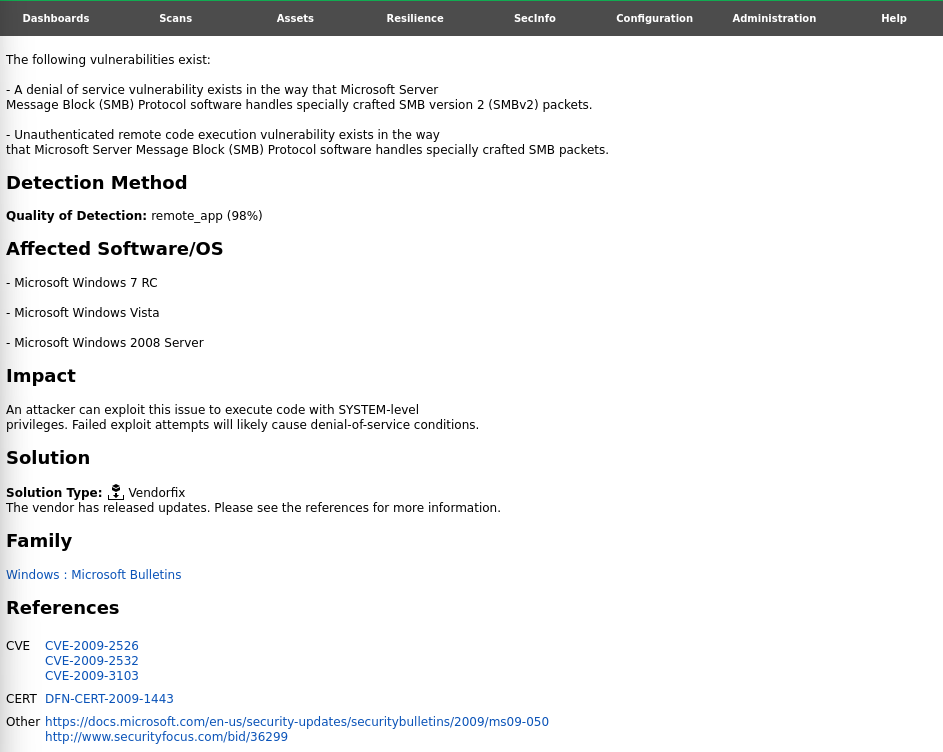

<div class="container">
    <div class="px-4 py-5 my-5 text-center">
        <h2>Como usar OpenVas</h2>
        <h3 class="my-5">¿Que es?</h3>
        <p class="my-3">OpenVas es una herramienta de análisis de vulnerabilidades de tipo Opensource, esta
            herramienta nos permite analizar diferentes vulnerabilidades a diferentes PCs de forma que
            podamos determinar si hay alguna vulnerabilidad presente en los PCs analizados.</p>
        <h3>Instalación de OpenVas</h3>
        <p class="my-3">Primero actualizamos la máquina</p>
        
        <p class="my-3">Enviamos el comando de instalación de OpenVas</p>
        
        <p class="my-3">Le damos el comando de Setup de Openvas para que se creen las bases de datos de
            vulnerabilidades y se descarguen los registros de bases de datos necesarias para el analisis
            de vulnerabilidades</p>
        
        
        <p class="my-3">Una vez descargadas las bases de datos podemos validar la instalación</p>
        
        <p class="my-3">Verificamos la instalación de la siguiente manera</p>
        
        
        <p class="my-3">Creación de diferentes reportes para detección de vulnerabilidades
            Descargamos una máquina de prueba que nos permite analizar qué tipos de
            vulnerabilidades se pueden presentar, primero descargamos una máquina virtual de
            Ubuntu-20.10-server.
            </p>
        <p class="my-3">Arrancamos la máquina virtual con Kali-Linux, e iniciamos el servicio de Openvas</p>
        
        <p class="my-3">Se iniciará el servicio en la máquina virtual y nos abrirá el host en donde se está alojando el
            servicio donde debemos ingresar las credenciales que se generaron en la instalación</p>
        
        <h2 class="my-5">Ejercicio practico</h2>
        <p class="my-3">Una vez estemos en el servicio debemos entrar a Scans t allí iniciar una nueva task</p>
        
        <p class="my-3">Tendremos esta visual en donde debemos darle un nombre a la tarea y establece un nuevo target</p>
        
        <p class="my-3">Pero antes de eso debemos iniciar la máquina virtual de Ubuntu para saber que IP tiene asignada esta máquina</p>
        
        <p class="my-3">Para averiguar cual es la IP asignada digitamos el comando ifconfig en este caso 192.168.0.15</p>
        
        <p class="my-3">Cuando intentemos crear un nuevo target veremos esta pantalla en la cual el host debe ser la IP de la máquina que vamos a analizar alli tambien seleccionamos las opciones de  All IANA assigned TCP and UDP en el apartado de Port List y ICMP ping en alive test y guardamos esta configuración del target </p>
        
        <p class="my-3">Una vez configurado el target debemos ver la task de la siguiente manera y guardamos la task</p>
        
        <p class="my-3">Vemos entonces la tarea pendiente para ser iniciada</p>
        
        <p class="my-3">Y una vez iniciada veremos como para de estado Requested a Running</p>
        
        
        <p class="my-3">Una vez realizado el escaneo vemos los siguientes resultados</p>
        
        <p class="my-3">Resultado de escaneo en Windows</p>
        
        
        
        <h2 class="my-5">Conclusiones</h2>
        <p class="my-3">Los informes generados por OpenVAS proporcionan una visión crítica de las vulnerabilidades presentes en los sistemas escaneados, permitiendo una evaluación precisa de los riesgos para la seguridad de la red.</p>
        <p class="my-3">Al identificar vulnerabilidades como el fin de soporte del sistema operativo en un servidor Ubuntu y el error en el servicio SSH, OpenVAS resalta la importancia de mantener actualizados los sistemas y configurar adecuadamente los servicios para mitigar posibles ataques.</p>
        <p class="my-3">La detección de vulnerabilidades como DCE/RPC y MSRPC Services Enumeration en sistemas Windows subraya la importancia de abordar las debilidades en la configuración del sistema operativo y los servicios asociados para prevenir la explotación por parte de los atacantes.</p>
        <p class="my-3">Los resultados detallados proporcionados por OpenVAS permiten a los equipos de seguridad tomar medidas proactivas para remediar las vulnerabilidades identificadas, fortaleciendo así la postura de seguridad general de la organización.</p>
        <p class="my-3">OpenVAS emerge como una herramienta invaluable para la identificación temprana y la mitigación de riesgos de seguridad en entornos de red, proporcionando información crucial para proteger activamente los sistemas contra posibles amenazas y ataques.</p>
    </div>
</div>